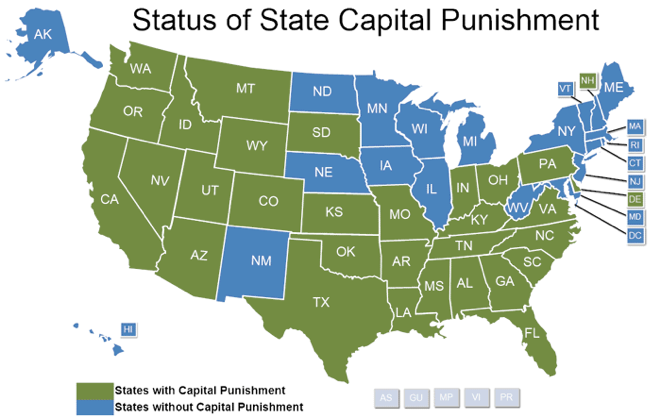

ZDA
ZDA kljub slovesu zelo razvite države še vedno uporabljajo smrtno kazen. Smrtno kazen uporablja samo 36 zveznih držav. (Amnesty International, 2015)
Vse zvezne države kot način usmrtitve uporabljajo injekcijo. Toda ponekod se še vedno uporabljajo alternativne metode kot so električni stol vislice, …
Zločini za katere je možna dodelitev smrtne kazni so na primer: umor, terorizem, posilstvo otrok, …
Na smrt zaradi katerega koli zločina ne morejo biti obsojeni mladoletni, noseče ženske ter duševno bolni in umsko zaostali ljudje.
Vsaka zvezna država uporablja svoje kazensko pravo, a mora pri tem upoštevati vse zakone, ki jih sprejme vlada. Vsak obsojeni ima pravico do pritožbe in predsednik lahko pomilosti katerega koli obsojenega. (Cornell Law School, 2014)